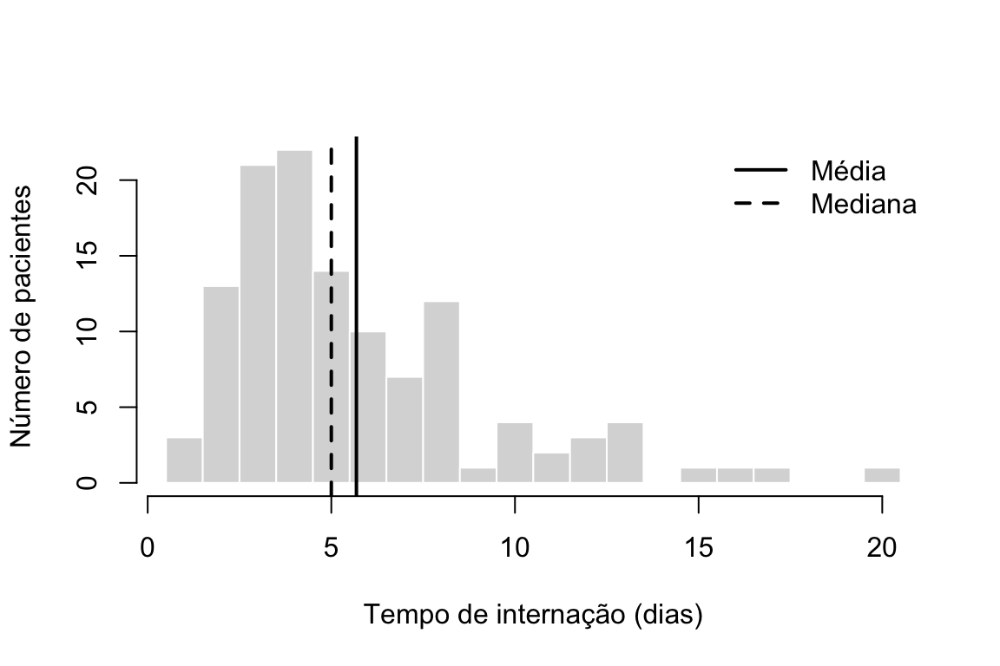
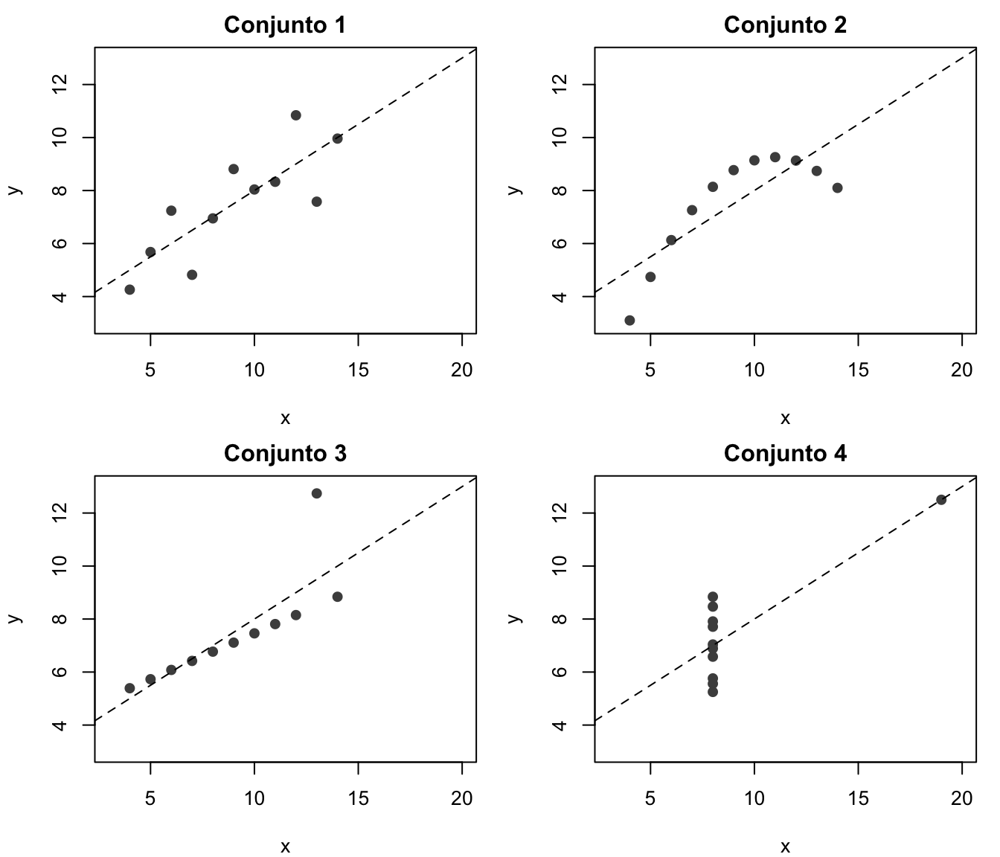
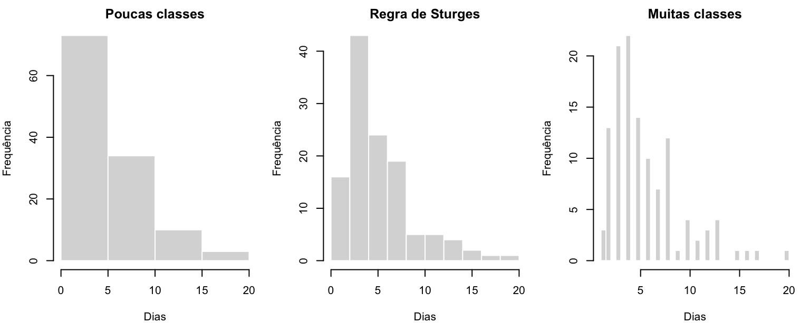
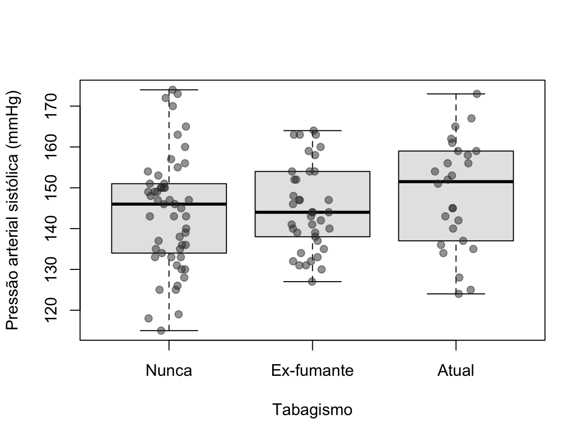
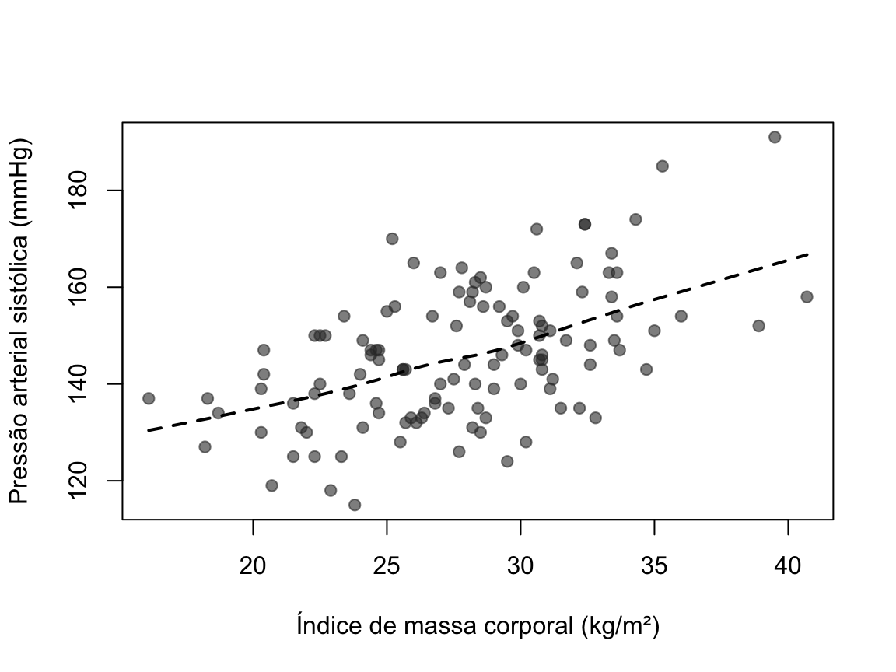

Capítulo 5 Bioestatística descritiva
Hércules Rezende Freitas, Ph.D.\(^1\)
\(^1\)Universidade do Estado do Rio de Janeiro (UERJ), Faculdade de Ciências Médicas, Departamento de Ciências Médicas Integradas, Laboratório de Informática em Saúde (LabInfoS), Cabo Frio/RJ, Brasil.
Toda análise de dados começa pela descrição. Antes de estimar parâmetros, testar hipóteses ou ajustar modelos, o pesquisador precisa saber o que tem nas mãos: quantas observações existem, quais valores aparecem com mais frequência, quão dispersos eles estão, se há valores aberrantes, dados faltantes ou erros de digitação. A estatística descritiva reúne os métodos numéricos e gráficos que resumem um conjunto de dados sem pretender, por si só, generalizar para além dele. A generalização da amostra para a população é tarefa da estatística inferencial, tratada no capítulo seguinte.
Resumir significa perder informação. Uma média condensa centenas de valores em um único número, e essa compressão só é útil se o número escolhido representar bem o que se quer comunicar. Por isso, a pergunta central deste capítulo não é apenas “como calcular”, mas “qual medida é adequada para estes dados e para esta pergunta”.
Ao longo do capítulo usaremos dois tipos de exemplo. Os exemplos pequenos, com poucos valores, servem para acompanhar os cálculos à mão. O conjunto pacientes, com 120 registros, serve para os exemplos em R e para os gráficos. Esse conjunto é simulado: os valores foram gerados por computador com distribuições plausíveis para pacientes adultos internados e não correspondem a pessoas reais. O código que o gera está no início do arquivo-fonte deste capítulo, e qualquer leitor pode reproduzi-lo exatamente, pois usamos uma semente fixa (set.seed(2024)).
## sexo idade tabagismo imc comorbidades pas tempo
## 1 Masculino 80 Ex-fumante 28.5 1 130 3
## 2 Feminino 71 Nunca 32.4 1 173 4
## 3 Masculino 67 Ex-fumante 33.6 2 154 6
## 4 Masculino 63 Ex-fumante 32.6 5 148 3
## 5 Feminino 81 Ex-fumante 23.4 1 154 4
## 6 Masculino 59 Atual 36.0 0 154 13## 'data.frame': 120 obs. of 7 variables:
## $ sexo : Factor w/ 2 levels "Feminino","Masculino": 2 1 2 2 1 2 1 1 2 1 ...
## $ idade : num 80 71 67 63 81 59 37 70 67 36 ...
## $ tabagismo : Factor w/ 3 levels "Nunca","Ex-fumante",..: 2 1 2 2 2 3 1 2 1 2 ...
## $ imc : num 28.5 32.4 33.6 32.6 23.4 36 25 28.7 22.5 28.2 ...
## $ comorbidades: int 1 1 2 5 1 0 1 2 2 2 ...
## $ pas : num 130 173 154 148 154 154 155 133 150 159 ...
## $ tempo : num 3 4 6 3 4 13 8 3 4 5 ...As variáveis são: sexo; idade (anos); tabagismo (nunca, ex-fumante, atual); índice de massa corporal (IMC, kg/m²); número de comorbidades; pressão arterial sistólica (pas, mmHg) e tempo de internação (tempo, dias).
Notação. Uma amostra de tamanho \(n\) é escrita como \(x_1, x_2, \ldots, x_n\). Quando os mesmos valores aparecem ordenados do menor para o maior, usamos parênteses no índice: \(x_{(1)} \le x_{(2)} \le \cdots \le x_{(n)}\). Assim, \(x_{(1)}\) é o mínimo e \(x_{(n)}\) é o máximo. Letras gregas (\(\mu\), \(\sigma\)) indicam parâmetros da população; letras latinas (\(\bar{x}\), \(s\)) indicam estatísticas calculadas na amostra. No texto usamos vírgula como separador decimal; o R, como a maioria dos programas, usa ponto.
5.1 Tipos de variáveis e escalas de medida
A escolha de qualquer medida descritiva depende do tipo de variável. Calcular a média do grupo sanguíneo não faz sentido, assim como não faz sentido dizer que a moda é a melhor síntese da glicemia de jejum de 500 pacientes. A classificação mais usada vem de Stevens (1946), que propôs quatro escalas de medida.
Variáveis qualitativas (categóricas) registram a pertença a uma categoria.
- Nominais: as categorias não têm ordem natural. Exemplos: sexo, grupo sanguíneo, tipo de tratamento, município de residência. Só faz sentido contar quantas observações há em cada categoria.
- Ordinais: as categorias têm ordem, mas a distância entre elas não é definida. Exemplos: estadiamento de um tumor (I, II, III, IV), escolaridade, escala de Likert (“discordo totalmente” a “concordo totalmente”), classe funcional da NYHA. Sabemos que o estádio III é mais avançado que o II, mas não que a “distância” entre II e III seja igual à que separa I e II.
Variáveis quantitativas (numéricas) registram uma quantidade.
- Intervalares: as diferenças entre valores têm significado, mas o zero é arbitrário. O exemplo clássico é a temperatura em graus Celsius. A diferença entre 10 °C e 20 °C é igual à diferença entre 30 °C e 40 °C, mas 20 °C não é “o dobro” de 10 °C, porque 0 °C não representa ausência de calor.
- De razão: além das diferenças, as razões têm significado, porque o zero é absoluto. Exemplos: massa corporal, concentração sérica de creatinina, tempo de internação, temperatura em kelvin. Um paciente com 80 kg tem o dobro da massa de outro com 40 kg.
Uma segunda classificação, transversal à anterior, distingue variáveis quantitativas discretas (assumem valores contáveis, em geral inteiros: número de filhos, número de comorbidades, número de crises convulsivas por mês) de contínuas (podem assumir qualquer valor em um intervalo, limitadas apenas pela precisão do instrumento: estatura, pressão arterial, concentração de um analito).
A Tabela 5.1 resume quais operações e medidas são admissíveis em cada escala. Cada escala herda as operações das escalas acima dela.
| Escala | Operações com sentido | Tendência central | Dispersão | Exemplo |
|---|---|---|---|---|
| Nominal | igual / diferente | moda | proporções por categoria | grupo sanguíneo |
| Ordinal | + ordenação (maior / menor) | + mediana | + quantis, amplitude interquartil | estadiamento tumoral |
| Intervalar | + diferenças | + média | + desvio padrão, variância | temperatura (°C) |
| De razão | + razões | + média geométrica | + coeficiente de variação | creatinina sérica |
Duas observações práticas evitam erros frequentes.
- O código numérico não muda a escala. Se o sexo for registrado como 1 (feminino) e 2 (masculino), a variável continua nominal. O R calculará sem reclamar a média de um vetor de 1s e 2s, mas o resultado (por exemplo, 1,45) não tem interpretação como “sexo médio”. Em R, variáveis categóricas devem ser armazenadas como
factor, o que impede esse tipo de engano em muitas funções. - Escalas ordinais pedem cautela com médias. É comum relatar a média de escores de dor (0 a 10) ou de itens de Likert. Isso pressupõe que as distâncias entre categorias sejam iguais, o que nem sempre se justifica. Na dúvida, relate mediana e quartis, e deixe explícito quando optar pela média.
Por fim, uma variável contínua pode ser categorizada (por exemplo, IMC em “baixo peso”, “eutrofia”, “sobrepeso” e “obesidade”). Isso facilita a comunicação, mas descarta informação: um paciente com IMC de 29,9 kg/m² e outro com 25,0 kg/m² passam a ser tratados como iguais. Para descrever e analisar, prefira manter a variável contínua e reserve as categorias para a apresentação, quando houver pontos de corte clinicamente estabelecidos.
5.2 Medidas de tendência central
Medidas de tendência central (ou de posição) indicam um valor “típico” em torno do qual os dados se distribuem. As três principais são a média, a mediana e a moda. Para acompanhar os cálculos, usaremos o tempo de internação, em dias, de sete pacientes:
\[ 3,\; 4,\; 4,\; 5,\; 6,\; 8,\; 19 \]
5.2.1 Média
A média aritmética é a soma dos valores dividida pelo número de observações:
\[\begin{equation} \bar{x} = \frac{1}{n}\sum_{i=1}^{n} x_i = \frac{x_1 + x_2 + \cdots + x_n}{n} \tag{5.1} \end{equation}\]
No exemplo, \(\bar{x} = (3 + 4 + 4 + 5 + 6 + 8 + 19)/7 = 49/7 = 7\) dias.
## [1] 7## [1] 7A média tem uma interpretação física útil: é o ponto de equilíbrio dos dados. Se cada observação fosse um peso igual colocado sobre uma régua, a régua ficaria equilibrada exatamente sobre \(\bar{x}\). Algebricamente, isso significa que a soma dos desvios em relação à média é sempre zero:
\[ \sum_{i=1}^{n}(x_i - \bar{x}) = \sum_{i=1}^{n} x_i - n\bar{x} = n\bar{x} - n\bar{x} = 0. \]
No exemplo, os desvios são \(-4, -3, -3, -2, -1, 1, 12\), cuja soma é zero. Observe que um único desvio positivo (12) compensa seis desvios negativos. É por isso que a média é “puxada” por valores extremos.
Uma segunda propriedade explica por que a média é tão central na estatística. Entre todos os números \(c\) que poderíamos escolher para representar os dados, a média é o que minimiza a soma dos quadrados dos desvios \(\sum (x_i - c)^2\). Para ver isso, some e subtraia \(\bar{x}\) dentro do parêntese:
\[ \sum_{i=1}^{n}(x_i - c)^2 = \sum_{i=1}^{n}\big[(x_i - \bar{x}) + (\bar{x} - c)\big]^2 = \sum_{i=1}^{n}(x_i - \bar{x})^2 + n(\bar{x} - c)^2 . \]
O termo cruzado desaparece porque \(\sum (x_i - \bar{x}) = 0\). O primeiro termo não depende de \(c\), e o segundo é sempre maior ou igual a zero, valendo zero apenas quando \(c = \bar{x}\). Essa propriedade reaparecerá na definição da variância e no método dos mínimos quadrados da regressão linear.
Sensibilidade a valores extremos. Sem o paciente que ficou 19 dias internado, a média dos seis restantes seria \(30/6 = 5\) dias. Uma única observação deslocou a média em 2 dias, ou 40%. Diz-se que a média tem ponto de ruptura (breakdown point) igual a zero: basta uma observação suficientemente extrema, em qualquer tamanho de amostra, para levar a média a qualquer valor. Isso não torna a média uma medida ruim. Em distribuições aproximadamente simétricas ela é a estimativa mais eficiente do centro, e há situações em que os valores extremos importam (o custo total de um serviço de saúde depende justamente dos pacientes mais caros). O que importa é saber o que ela representa.
Transformações lineares. Se cada valor for transformado como \(y_i = a + b\,x_i\), a média se transforma da mesma maneira: \(\bar{y} = a + b\,\bar{x}\). Isso é útil na conversão de unidades. A glicemia em mg/dL dividida por 18,016 fornece aproximadamente o valor em mmol/L; portanto, a média em mmol/L é a média em mg/dL dividida pelo mesmo fator, sem necessidade de recalcular a partir dos dados.
Média ponderada. Quando as observações têm importâncias diferentes, usa-se a média ponderada, com pesos \(w_i \ge 0\):
\[ \bar{x}_w = \frac{\sum_{i=1}^{n} w_i x_i}{\sum_{i=1}^{n} w_i}. \]
O caso mais comum é a combinação de médias de grupos de tamanhos diferentes. Suponha que, em um hospital, 30 pacientes da enfermaria A tenham idade média de 70 anos e 10 pacientes da enfermaria B tenham idade média de 90 anos. A idade média dos 40 pacientes não é \((70 + 90)/2 = 80\) anos, mas
\[ \bar{x}_w = \frac{30 \times 70 + 10 \times 90}{30 + 10} = \frac{3000}{40} = 75 \text{ anos}. \]
## [1] 75Média aparada. Uma solução intermediária entre a média e a mediana é a média aparada (trimmed mean): descarta-se uma fração dos valores em cada extremo e calcula-se a média dos restantes. Em R, mean(x, trim = 0.1) remove 10% das observações de cada lado.
Média geométrica. Para variáveis de razão estritamente positivas e com assimetria à direita (títulos de anticorpos, concentrações de biomarcadores, cargas virais), é comum usar a média geométrica, \(\left(\prod x_i\right)^{1/n}\), que equivale a calcular a média dos logaritmos e depois aplicar a exponencial: exp(mean(log(x))).
5.2.2 Mediana
A mediana é o valor que divide a amostra ordenada em duas metades: pelo menos 50% das observações são menores ou iguais a ela, e pelo menos 50% são maiores ou iguais. Com os dados ordenados, \(x_{(1)} \le \cdots \le x_{(n)}\):
\[ \text{Md} = \begin{cases} x_{\left(\frac{n+1}{2}\right)}, & \text{se } n \text{ for ímpar},\\[2mm] \dfrac{x_{\left(\frac{n}{2}\right)} + x_{\left(\frac{n}{2}+1\right)}}{2}, & \text{se } n \text{ for par}. \end{cases} \]
No exemplo, \(n = 7\) é ímpar, e a mediana é a observação de posição \((7+1)/2 = 4\), ou seja, \(\text{Md} = 5\) dias. Sem o paciente de 19 dias, teríamos \(n = 6\), e a mediana seria a média das posições 3 e 4: \((4 + 5)/2 = 4{,}5\) dias. Compare: a retirada do valor extremo alterou a média em 2 dias, mas a mediana em apenas meio dia.
## [1] 5## [1] 4.5A mediana é robusta: seu ponto de ruptura é de 50%, isto é, quase metade das observações precisaria ser alterada para levá-la a um valor arbitrário. Assim como a média minimiza a soma dos quadrados dos desvios, a mediana minimiza a soma dos desvios absolutos, \(\sum |x_i - c|\).
A mediana é a medida de escolha para variáveis ordinais e para variáveis quantitativas com forte assimetria, como tempo de internação, renda, custos hospitalares, concentrações de marcadores inflamatórios e tempo até um evento.
5.2.3 Moda
A moda é o valor (ou a categoria) que ocorre com maior frequência. No exemplo, a moda é 4 dias, o único valor que aparece duas vezes. É a única medida de tendência central aplicável a variáveis nominais: em uma amostra de pacientes, a moda do grupo sanguíneo pode ser “O+”.
Uma distribuição pode ter mais de uma moda (bimodal, multimodal) ou nenhuma (quando todos os valores são distintos). A presença de duas modas em uma variável contínua costuma indicar a mistura de duas populações diferentes, como a distribuição de estatura em uma amostra que reúne homens e mulheres. Em variáveis contínuas medidas com boa precisão, raramente há valores repetidos, e por isso fala-se em classe modal: o intervalo de uma distribuição de frequências (ou o pico de um histograma) com maior concentração de observações.
O R não tem uma função nativa para a moda estatística (a função mode() do R informa o tipo de armazenamento de um objeto, o que é outra coisa). Uma implementação simples, que devolve todas as modas em caso de empate, é:
## [1] "4"## [1] "Nunca"5.2.4 Comparando média, mediana e moda
Em uma distribuição perfeitamente simétrica e unimodal, as três medidas coincidem. Quando há assimetria, elas se separam. No conjunto pacientes, o tempo de internação tem cauda longa à direita (alguns pacientes ficam muito mais tempo que os demais): a média é de 5,7 dias e a mediana, de 5,0 dias. A Figura 5.1 mostra as duas medidas sobre o histograma.
hist(pacientes$tempo, breaks = seq(0.5, max(pacientes$tempo) + 0.5, by = 1),
col = "grey85", border = "white",
main = "", xlab = "Tempo de internação (dias)", ylab = "Número de pacientes")
abline(v = mean(pacientes$tempo), lwd = 2)
abline(v = median(pacientes$tempo), lwd = 2, lty = 2)
legend("topright", legend = c("Média", "Mediana"), lty = c(1, 2), lwd = 2, bty = "n")
Figura 5.1: Histograma do tempo de internação (dados simulados). A linha contínua indica a média e a linha tracejada, a mediana. A cauda à direita desloca a média para cima.
Muitos livros ensinam a regra “assimetria à direita implica média > mediana > moda”. A regra vale para muitas distribuições contínuas usadas na prática, mas não é um teorema: há contraexemplos, sobretudo em variáveis discretas e em distribuições multimodais, nos quais a média fica do lado oposto ao que a regra prevê (von Hippel 2005). A comparação entre média e mediana é um indício útil de assimetria, não um teste dela; a forma da distribuição se avalia melhor no gráfico dos dados.
A escolha da medida deve seguir a pergunta. Se o objetivo é estimar o custo total de internações de um serviço, a média é a medida relevante, mesmo com assimetria, porque o total é igual a \(n \times \bar{x}\). Se o objetivo é descrever a experiência de um paciente típico, a mediana é mais informativa.
5.3 Medidas de dispersão
Duas amostras podem ter a mesma média e ser completamente diferentes. Os conjuntos \(\{49, 50, 51\}\) e \(\{0, 50, 100\}\) têm média 50, mas o segundo é muito mais heterogêneo. Medidas de dispersão (ou de variabilidade) quantificam o quanto os valores se afastam uns dos outros ou do centro. Sem elas, uma medida de tendência central é quase impossível de interpretar.
5.3.1 Amplitude
A amplitude total é a diferença entre o maior e o menor valor:
\[ A = x_{(n)} - x_{(1)}. \]
No exemplo do tempo de internação, \(A = 19 - 3 = 16\) dias. Em R, range() devolve o mínimo e o máximo, e diff(range(x)) calcula a amplitude.
## [1] 3 19## [1] 16A amplitude é fácil de calcular e de comunicar, mas tem duas limitações sérias. Primeiro, depende apenas de duas observações, justamente as mais extremas, e é tão sensível a valores atípicos quanto possível. Segundo, tende a crescer com o tamanho da amostra: quanto mais pacientes observamos, maior a chance de encontrar alguém muito alto ou muito baixo. Por isso, amplitudes de estudos com tamanhos amostrais diferentes não são comparáveis. Relatar mínimo e máximo continua útil, por exemplo para mostrar a faixa de idade incluída em um estudo, mas não como medida principal de dispersão.
5.3.1.1 Quantis e amplitude interquartil
Uma alternativa robusta usa quantis. O quantil de ordem \(p\) (com \(0 < p < 1\)) é um valor abaixo do qual está uma proporção \(p\) dos dados. Os quartis dividem os dados ordenados em quatro partes: o primeiro quartil (\(Q_1\)) corresponde a \(p = 0{,}25\); o segundo (\(Q_2\)) é a mediana; o terceiro (\(Q_3\)) corresponde a \(p = 0{,}75\). Os percentis usam \(p\) em centésimos (o percentil 90 é o quantil 0,90), linguagem comum nas curvas de crescimento infantil.
A amplitude interquartil (AIQ, ou IQR, do inglês interquartile range) é a distância entre o terceiro e o primeiro quartil:
\[ \text{AIQ} = Q_3 - Q_1 . \]
Ela cobre os 50% centrais dos dados e, como a mediana, não é afetada pelos 25% de valores em cada extremo.
Há um detalhe técnico que costuma surpreender: não existe uma única definição de quantil amostral. Quando a posição desejada cai entre duas observações, é preciso decidir como interpolar, e os programas estatísticos fazem escolhas diferentes. Hyndman e Fan (1996) catalogaram nove definições, todas disponíveis no argumento type da função quantile() do R. O padrão do R (tipo 7, o mesmo da função QUARTIL.INC do Excel) calcula a posição
\[ h = (n - 1)p + 1 \]
e interpola linearmente entre \(x_{(\lfloor h \rfloor)}\) e \(x_{(\lfloor h \rfloor + 1)}\), onde \(\lfloor h \rfloor\) é a parte inteira de \(h\). No exemplo com \(n = 7\):
- para \(Q_1\): \(h = 6 \times 0{,}25 + 1 = 2{,}5\), a meio caminho entre \(x_{(2)} = 4\) e \(x_{(3)} = 4\), logo \(Q_1 = 4\);
- para \(Q_3\): \(h = 6 \times 0{,}75 + 1 = 5{,}5\), a meio caminho entre \(x_{(5)} = 6\) e \(x_{(6)} = 8\), logo \(Q_3 = 7\).
Assim, \(\text{AIQ} = 7 - 4 = 3\) dias. O SPSS e o Minitab usam por padrão outra definição (tipo 6), com posição \(h = (n + 1)p\), que neste exemplo produz \(Q_3 = 8\):
## 0% 25% 50% 75% 100%
## 3 4 5 7 19## 0% 25% 50% 75% 100%
## 3 4 5 8 19## [1] 3Em amostras grandes as diferenças entre definições são desprezíveis, mas em amostras pequenas elas explicam por que dois programas fornecem quartis diferentes para os mesmos dados. Nenhum dos dois está errado. Em trabalhos com amostras pequenas, vale informar o programa usado.
5.3.1.2 Medidas robustas baseadas em desvios absolutos
O desvio absoluto mediano (MAD, do inglês median absolute deviation) é a mediana das distâncias absolutas entre cada valor e a mediana: \(\text{MAD} = \text{Md}\big(|x_i - \text{Md}(x)|\big)\). No exemplo, as distâncias à mediana 5 são \(2, 1, 1, 0, 1, 3, 14\), cuja mediana é 1. A função mad() do R multiplica esse valor por 1,4826 por padrão. Essa constante faz o MAD estimar o desvio padrão quando os dados vêm de uma distribuição normal, o que permite comparar as duas medidas. Use mad(x, constant = 1) para obter o valor bruto.
## [1] 1## [1] 1.48265.3.2 Variância
A ideia natural para medir dispersão é olhar os desvios em relação à média, \(x_i - \bar{x}\). Somá-los não funciona, porque a soma é sempre zero. Elevá-los ao quadrado resolve o problema dos sinais e dá peso maior a desvios grandes. A variância amostral é
\[\begin{equation} s^2 = \frac{1}{n-1}\sum_{i=1}^{n}(x_i - \bar{x})^2 . \tag{5.2} \end{equation}\]
A Tabela 5.2 mostra o cálculo passo a passo para o exemplo, com \(\bar{x} = 7\).
| \(i\) | \(x_i\) | \(x_i - \bar{x}\) | \((x_i - \bar{x})^2\) |
|---|---|---|---|
| 1 | 3 | -4 | 16 |
| 2 | 4 | -3 | 9 |
| 3 | 4 | -3 | 9 |
| 4 | 5 | -2 | 4 |
| 5 | 6 | -1 | 1 |
| 6 | 8 | 1 | 1 |
| 7 | 19 | 12 | 144 |
| Soma | 49 | 0 | 184 |
Então \(s^2 = 184/(7 - 1) = 184/6 \approx 30{,}67\) dias². Note que o valor 19, sozinho, contribui com 144 dos 184 da soma de quadrados: elevar ao quadrado amplifica os desvios grandes, e por isso a variância é ainda mais sensível a valores extremos do que a média.
## [1] 30.66667## [1] 30.66667A unidade da variância é o quadrado da unidade original (dias², mmHg², (kg/m²)²), o que dificulta a interpretação direta. Essa é a motivação para o desvio padrão, discutido a seguir.
5.3.2.1 Por que dividir por \(n - 1\)?
Se conhecêssemos a média populacional \(\mu\), a variância populacional seria estimada naturalmente por \(\frac{1}{n}\sum (x_i - \mu)^2\). Na prática, \(\mu\) é desconhecida e a substituímos por \(\bar{x}\). Ocorre que \(\bar{x}\) é, por construção, o valor que minimiza a soma dos quadrados dos desvios (veja a seção sobre a média). Portanto, \(\sum (x_i - \bar{x})^2\) é sempre menor ou igual a \(\sum (x_i - \mu)^2\): usar a média amostral faz os dados parecerem menos dispersos do que realmente são.
A identidade que vimos na seção da média, com \(c = \mu\), quantifica esse viés:
\[ \sum_{i=1}^{n}(x_i - \bar{x})^2 = \sum_{i=1}^{n}(x_i - \mu)^2 - n(\bar{x} - \mu)^2 . \]
Tomando o valor esperado (a média ao longo de infinitas amostras repetidas) de cada lado, e usando os fatos de que \(E[(x_i - \mu)^2] = \sigma^2\) e \(E[(\bar{x} - \mu)^2] = \sigma^2/n\) (a variância da média amostral, que será estudada no próximo capítulo), obtemos
\[ E\left[\sum_{i=1}^{n}(x_i - \bar{x})^2\right] = n\sigma^2 - n\cdot\frac{\sigma^2}{n} = (n - 1)\sigma^2 . \]
Logo, dividir a soma de quadrados por \(n - 1\), e não por \(n\), produz um estimador cuja média ao longo de amostras repetidas é exatamente \(\sigma^2\), isto é, um estimador não viesado. Essa correção é conhecida como correção de Bessel. O número \(n - 1\) é chamado de graus de liberdade: como os desvios em relação a \(\bar{x}\) precisam somar zero, conhecidos \(n - 1\) deles o último está determinado.
Quando o conjunto de dados é a população inteira (por exemplo, todos os leitos de um hospital em um dado dia), a variância é calculada com divisor \(n\) e representada por \(\sigma^2\). Em pesquisa clínica e epidemiológica, quase sempre trabalhamos com amostras, e as funções var() e sd() do R usam \(n - 1\).
A simulação a seguir permite verificar a correção empiricamente. Sorteamos 10.000 amostras de tamanho 5 de uma distribuição normal com \(\sigma^2 = 100\) e comparamos a média dos dois estimadores.
set.seed(1)
amostras <- replicate(10000, rnorm(5, mean = 50, sd = 10))
var_n1 <- apply(amostras, 2, var) # divisor n - 1
var_n <- apply(amostras, 2, function(x) mean((x - mean(x))^2)) # divisor n
c(divisor_n_menos_1 = mean(var_n1), divisor_n = mean(var_n))## divisor_n_menos_1 divisor_n
## 101.32708 81.06166O estimador com divisor \(n\) subestima a variância em média por um fator \((n-1)/n = 4/5\), ou seja, fica perto de 80, e não de 100.
Nota de cálculo. Alguns livros apresentam a fórmula “computacional” \(s^2 = \left(\sum x_i^2 - n\bar{x}^2\right)/(n-1)\), algebricamente equivalente à Equação (5.2). Ela é cômoda para cálculo manual, mas pode perder precisão no computador quando os valores são grandes e pouco dispersos, porque subtrai dois números muito próximos. Os programas estatísticos usam algoritmos mais estáveis; ao programar suas próprias funções, prefira a forma com desvios.
5.3.3 Desvio padrão
O desvio padrão é a raiz quadrada positiva da variância:
\[ s = \sqrt{s^2} = \sqrt{\frac{1}{n-1}\sum_{i=1}^{n}(x_i - \bar{x})^2}. \]
No exemplo, \(s = \sqrt{30{,}67} \approx 5{,}54\) dias. A vantagem sobre a variância é que o desvio padrão está na mesma unidade dos dados. Informalmente, ele indica a distância típica entre as observações e a média.
## [1] 5.537749Sob uma transformação linear \(y_i = a + b\,x_i\), o desvio padrão se transforma como \(s_y = |b|\,s_x\): somar uma constante não altera a dispersão, e multiplicar por uma constante multiplica a dispersão pelo seu valor absoluto.
5.3.3.1 Interpretando o desvio padrão
Quanto dos dados fica a até \(k\) desvios padrão da média? A resposta depende da forma da distribuição, e há duas regras que o leitor precisa distinguir.
- Desigualdade de Chebyshev (qualquer distribuição). Para qualquer conjunto de dados e qualquer \(k > 1\), a proporção de observações a menos de \(k\) desvios padrão da média é de pelo menos \(1 - 1/k^2\). Com \(k = 2\), pelo menos 75% dos dados estão no intervalo \(\bar{x} \pm 2s\); com \(k = 3\), pelo menos 88,9%. É uma garantia fraca, mas universal.
- Regra empírica (distribuição normal). Se os dados forem aproximadamente normais, cerca de 68% estão em \(\bar{x} \pm s\), 95% em \(\bar{x} \pm 1{,}96s\) e 99,7% em \(\bar{x} \pm 3s\). Essa regra só vale para distribuições próximas da normal, discutida em detalhe no capítulo de inferência.
## [1] 0.9583333No conjunto simulado, a pressão arterial sistólica tem média de 146,0 mmHg e desvio padrão de 13,8 mmHg; 95,8% dos pacientes estão a menos de dois desvios padrão da média, valor próximo ao esperado para uma distribuição aproximadamente normal.
5.3.3.2 Média ± desvio padrão em dados assimétricos
É muito comum ver em artigos a notação “média ± DP” aplicada a qualquer variável. Para variáveis assimétricas, isso pode ser enganoso. Considere uma variável que não pode ser negativa, como a proteína C-reativa (PCR). Se um artigo relata PCR de 8,2 ± 11,5 mg/L, o intervalo \(\bar{x} - 2s\) seria negativo, o que é impossível. Esse é um sinal clássico de assimetria à direita: se a média for menor do que duas vezes o desvio padrão em uma variável estritamente positiva, a distribuição provavelmente é assimétrica (Altman and Bland 1996). Nesses casos, relate mediana e quartis (ou mediana e AIQ).
5.3.3.3 Desvio padrão não é erro padrão
Um erro persistente na literatura biomédica é confundir o desvio padrão (DP) com o erro padrão da média (EPM), \(\text{EP} = s/\sqrt{n}\) (Altman and Bland 2005). As duas medidas respondem a perguntas diferentes:
- o DP descreve a variabilidade entre os indivíduos da amostra e não diminui sistematicamente com o aumento de \(n\);
- o EP descreve a incerteza na estimativa da média e diminui à medida que \(n\) cresce.
Para descrever a amostra, use o DP. O EP pertence à inferência e é mais bem comunicado na forma de um intervalo de confiança, tema do próximo capítulo. Como o EP é sempre menor que o DP (para \(n > 1\)), relatar “média ± EP” em uma tabela descritiva dá a falsa impressão de que os dados são pouco variáveis.
5.3.3.4 Coeficiente de variação
Para comparar a dispersão de variáveis em escalas ou unidades diferentes, usa-se o coeficiente de variação (CV), o desvio padrão expresso como proporção da média:
\[ \text{CV} = \frac{s}{\bar{x}} \times 100\%. \]
Um desvio padrão de 10 kg na massa corporal de adultos (média de 70 kg) corresponde a um CV de 14,3%; um desvio padrão de 0,5 kg no peso ao nascer (média de 3,2 kg) corresponde a um CV de 15,6%. Em termos relativos, a variabilidade é semelhante. O CV também é usado em laboratório para expressar a precisão de um ensaio (CV intra e interensaio). Ele só tem sentido para variáveis de razão: com temperaturas em °C, por exemplo, o CV mudaria ao trocar a escala para Fahrenheit, porque o zero é arbitrário.
## [1] 16.651435.4 Distribuições de frequência
Uma distribuição de frequências mostra como as observações se repartem entre os valores ou classes possíveis. É o primeiro passo para conhecer a forma dos dados e a base de vários gráficos. Para cada valor ou classe \(j\), definimos:
- frequência absoluta (\(f_j\)): número de observações na classe;
- frequência relativa (\(f_j/n\)): proporção de observações na classe, frequentemente expressa em porcentagem;
- frequência acumulada (\(F_j\)): soma das frequências até a classe \(j\), inclusive. Só faz sentido quando há ordem entre as classes (variáveis ordinais ou quantitativas).
Variáveis qualitativas. Para variáveis nominais e ordinais, as classes são as próprias categorias.
f <- table(pacientes$tabagismo)
fr <- prop.table(f)
data.frame(
Tabagismo = names(f),
Absoluta = as.vector(f),
`Relativa (%)` = round(100 * as.vector(fr), 1),
`Acumulada (%)` = round(100 * cumsum(as.vector(fr)), 1),
check.names = FALSE
)## Tabagismo Absoluta Relativa (%) Acumulada (%)
## 1 Nunca 53 44.2 44.2
## 2 Ex-fumante 41 34.2 78.3
## 3 Atual 26 21.7 100.0Como os níveis do fator tabagismo seguem a ordem natural da variável (nunca, ex-fumante, atual), a frequência acumulada pode ser lida, por exemplo, como a proporção de pacientes “no máximo ex-fumantes”. Para uma variável nominal, como o grupo sanguíneo, a coluna acumulada não teria interpretação e deveria ser omitida.
Variáveis quantitativas discretas com poucos valores distintos podem ser tabuladas da mesma forma, valor a valor; por exemplo, o comando table(pacientes$comorbidades) conta quantos pacientes têm cada número de comorbidades.
Variáveis quantitativas contínuas precisam ser agrupadas em classes (intervalos). Três decisões afetam o resultado: o número de classes, a amplitude de cada uma e a convenção nos limites. A notação \([a, b)\) indica que o limite inferior \(a\) pertence à classe e o superior \(b\) não; assim, um valor igual a \(b\) entra na classe seguinte. Classes devem ser mutuamente exclusivas e cobrir todos os valores. No R, a função cut() faz o agrupamento, e o argumento right = FALSE adota a convenção \([a, b)\).
classes_imc <- cut(pacientes$imc,
breaks = c(0, 18.5, 25, 30, 35, Inf),
labels = c("< 18,5", "18,5 a < 25", "25 a < 30", "30 a < 35", "≥ 35"),
right = FALSE)
f_imc <- table(classes_imc)
cbind(Absoluta = f_imc,
`Relativa (%)` = round(100 * prop.table(f_imc), 1),
`Acumulada (%)` = round(100 * cumsum(prop.table(f_imc)), 1))## Absoluta Relativa (%) Acumulada (%)
## < 18,5 3 2.5 2.5
## 18,5 a < 25 31 25.8 28.3
## 25 a < 30 45 37.5 65.8
## 30 a < 35 35 29.2 95.0
## ≥ 35 6 5.0 100.0Aqui os limites foram escolhidos por critério clínico (as faixas de IMC da Organização Mundial da Saúde). Quando não há pontos de corte consagrados, usam-se regras automáticas para definir o número \(k\) de classes de mesma largura. A mais antiga é a regra de Sturges (Sturges 1926), \(k = \lceil \log_2 n \rceil + 1\), adotada por padrão pela função hist() do R. Ela foi derivada supondo dados aproximadamente normais e tende a produzir poucas classes em amostras grandes ou assimétricas. A regra de Freedman–Diaconis (Freedman and Diaconis 1981) define a largura das classes como \(2 \times \text{AIQ} \times n^{-1/3}\); por usar a AIQ, é menos afetada por valores extremos. Nenhuma regra é ótima para todos os casos: a escolha deve ser feita olhando para os dados, e vale experimentar mais de uma.
5.4.1 Forma da distribuição: assimetria e curtose
Além do centro e da dispersão, a forma de uma distribuição pode ser resumida numericamente.
A assimetria (skewness) indica se uma das caudas é mais longa que a outra. Um coeficiente comum é o terceiro momento padronizado:
\[ g_1 = \frac{\frac{1}{n}\sum_{i=1}^{n}(x_i - \bar{x})^3}{\left[\frac{1}{n}\sum_{i=1}^{n}(x_i - \bar{x})^2\right]^{3/2}}. \]
Como os desvios estão elevados ao cubo, desvios positivos grandes produzem \(g_1 > 0\) (assimetria à direita, ou positiva) e desvios negativos grandes produzem \(g_1 < 0\) (assimetria à esquerda, ou negativa). Em uma distribuição simétrica, \(g_1 \approx 0\).
A curtose descreve o peso das caudas da distribuição, isto é, a propensão a produzir valores extremos. É medida pelo quarto momento padronizado; subtraindo 3 (o valor da distribuição normal), obtém-se o excesso de curtose, positivo em distribuições de caudas mais pesadas que a normal e negativo em distribuições de caudas mais leves. Ao contrário do que se lê com frequência, a curtose diz respeito sobretudo às caudas, e não ao “achatamento” do pico.
O R básico não tem funções para esses coeficientes (pacotes como moments e e1071 as oferecem), mas elas são fáceis de escrever:
assimetria <- function(x) {
d <- x - mean(x)
mean(d^3) / mean(d^2)^(3/2)
}
excesso_curtose <- function(x) {
d <- x - mean(x)
mean(d^4) / mean(d^2)^2 - 3
}
sapply(pacientes[, c("pas", "imc", "tempo")],
function(v) c(assimetria = assimetria(v), excesso_curtose = excesso_curtose(v)))## pas imc tempo
## assimetria 0.4281397 0.05948108 1.440942
## excesso_curtose 0.3106469 -0.05234317 2.152642O tempo de internação apresenta assimetria positiva bem maior que a da pressão arterial e do IMC, o que confirma a impressão visual da Figura 5.1. Existem várias versões desses coeficientes (com correções para amostras pequenas), e os programas nem sempre usam a mesma; por isso, valores próximos de zero não devem ser interpretados com excesso de precisão. Esses coeficientes também são instáveis em amostras pequenas e muito sensíveis a valores extremos. Eles complementam, mas não substituem, o exame gráfico.
5.5 Representações gráficas
Um bom gráfico revela o que as medidas resumo escondem: assimetrias, múltiplas modas, valores atípicos, erros de digitação, agrupamentos. O exemplo mais famoso é o quarteto de Anscombe (Anscombe 1973): quatro conjuntos de dados, cada um com 11 pares \((x, y)\), que têm praticamente as mesmas médias, variâncias e correlação entre \(x\) e \(y\), mas padrões completamente diferentes. Os dados acompanham o R (objeto anscombe).
resumo_anscombe <- sapply(1:4, function(i) {
x <- anscombe[[paste0("x", i)]]
y <- anscombe[[paste0("y", i)]]
c(media_x = mean(x), media_y = mean(y), var_x = var(x), var_y = var(y), r = cor(x, y))
})
colnames(resumo_anscombe) <- paste("Conjunto", 1:4)
round(resumo_anscombe, 2)## Conjunto 1 Conjunto 2 Conjunto 3 Conjunto 4
## media_x 9.00 9.00 9.00 9.00
## media_y 7.50 7.50 7.50 7.50
## var_x 11.00 11.00 11.00 11.00
## var_y 4.13 4.13 4.12 4.12
## r 0.82 0.82 0.82 0.82op <- par(mfrow = c(2, 2), mar = c(4, 4, 2, 1))
for (i in 1:4) {
x <- anscombe[[paste0("x", i)]]
y <- anscombe[[paste0("y", i)]]
plot(x, y, pch = 19, col = "grey30", xlim = c(3, 20), ylim = c(3, 13),
main = paste("Conjunto", i), xlab = "x", ylab = "y")
abline(lm(y ~ x), lty = 2)
}
Figura 5.2: Quarteto de Anscombe. Os quatro conjuntos têm médias, variâncias e correlação praticamente iguais, mas padrões muito diferentes.
Somente o conjunto 1 corresponde ao que as estatísticas resumo sugerem: uma relação linear com dispersão em torno da reta. O conjunto 2 mostra uma relação curva; o conjunto 3, uma relação linear quase perfeita perturbada por um único ponto; o conjunto 4, nenhuma relação, exceto pela influência de um ponto isolado. Por isso, os dados devem ser visualizados antes de serem resumidos.
Alguns princípios gerais orientam a construção de gráficos científicos:
- Mostre os dados, e não apenas resumos. Gráficos de barras com média e barra de erro (às vezes chamados de dynamite plots) escondem a distribuição: amostras com distribuições muito diferentes podem gerar barras idênticas. Para variáveis contínuas, especialmente com amostras pequenas, prefira gráficos que mostrem cada observação ou a forma da distribuição (Weissgerber et al. 2015).
- Use gráficos de barras para contagens e proporções de variáveis categóricas, com o eixo vertical começando em zero, já que o comprimento da barra codifica a quantidade.
- Rotule os eixos com a variável e a unidade, e explique na legenda o que cada elemento representa (por exemplo, se a barra de erro é DP, EP ou intervalo de confiança).
- Evite efeitos que distorcem a percepção: perspectiva tridimensional, eixos interrompidos sem aviso, gráficos de pizza com muitas categorias.
5.5.1 Histogramas
O histograma é a representação gráfica de uma distribuição de frequências de uma variável quantitativa contínua. O eixo horizontal é dividido em classes contíguas, e sobre cada classe ergue-se um retângulo. Diferentemente do gráfico de barras, não há espaços entre os retângulos, porque as classes cobrem um intervalo contínuo.
Rigorosamente, no histograma é a área do retângulo, e não sua altura, que representa a frequência. Quando todas as classes têm a mesma largura, área e altura são proporcionais e a distinção não importa. Com classes de larguras diferentes, o eixo vertical deve mostrar a densidade (frequência relativa dividida pela largura da classe), de modo que a área total do histograma seja igual a 1. Em R, hist(x, freq = FALSE) produz o histograma em escala de densidade, que permite sobrepor curvas de densidade teóricas.
A aparência de um histograma depende muito do número de classes. A Figura 5.3 mostra o mesmo tempo de internação com três escolhas diferentes.
op <- par(mfrow = c(1, 3), mar = c(4, 4, 2, 1))
hist(pacientes$tempo, breaks = 3, col = "grey85", border = "white",
main = "Poucas classes", xlab = "Dias", ylab = "Frequência")
hist(pacientes$tempo, breaks = "Sturges", col = "grey85", border = "white",
main = "Regra de Sturges", xlab = "Dias", ylab = "Frequência")
hist(pacientes$tempo, breaks = 40, col = "grey85", border = "white",
main = "Muitas classes", xlab = "Dias", ylab = "Frequência")
Figura 5.3: O mesmo conjunto de dados (tempo de internação, simulado) representado com diferentes números de classes. Poucas classes ocultam a forma da distribuição; classes demais produzem ruído.
Com poucas classes, a assimetria quase desaparece; com classes demais, o histograma fica fragmentado e sugere irregularidades que são apenas flutuação aleatória. No painel da direita aparecem ainda espaços vazios entre as barras: como o tempo de internação foi registrado em dias inteiros, classes mais estreitas que um dia ficam necessariamente vazias. Em variáveis discretas, as classes devem ter largura de pelo menos uma unidade, de preferência centradas nos valores possíveis. O argumento breaks aceita um número aproximado de classes, um vetor com os limites ou o nome de uma regra ("Sturges", "FD", "Scott"). Note que, quando se informa um número, o R o trata como sugestão e escolhe limites “redondos” próximos.
Ao ler um histograma, observe: (i) onde está o centro; (ii) a dispersão; (iii) a forma (simétrica, assimétrica, unimodal, bimodal); (iv) a presença de valores isolados, separados do restante.
5.5.2 Boxplots
O diagrama de caixa (boxplot), proposto por Tukey (1977), resume uma distribuição em cinco números e destaca valores potencialmente atípicos. Sua construção, na versão mais usada, é a seguinte:
- a caixa vai de \(Q_1\) a \(Q_3\); seu comprimento é a AIQ, e ela contém os 50% centrais dos dados;
- uma linha dentro da caixa marca a mediana;
- calculam-se as cercas (fences) inferior e superior: \(Q_1 - 1{,}5 \times \text{AIQ}\) e \(Q_3 + 1{,}5 \times \text{AIQ}\); as cercas não são desenhadas;
- as hastes (whiskers) se estendem da caixa até a observação mais extrema que ainda esteja dentro das cercas;
- observações além das cercas são desenhadas individualmente, como pontos, e sinalizadas como potencialmente atípicas.
No exemplo dos sete pacientes, \(Q_1 = 4\), \(Q_3 = 7\) e \(\text{AIQ} = 3\). As cercas ficam em \(4 - 4{,}5 = -0{,}5\) e \(7 + 4{,}5 = 11{,}5\). A haste superior vai até 8 (o maior valor abaixo de 11,5), e o paciente com 19 dias aparece como ponto isolado.
q <- quantile(tempo7, c(0.25, 0.75))
cercas <- c(inferior = q[[1]] - 1.5 * IQR(tempo7), superior = q[[2]] + 1.5 * IQR(tempo7))
cercas## inferior superior
## -0.5 11.5## [1] 19A interpretação exige dois cuidados. Primeiro, o critério de 1,5 × AIQ é uma convenção para chamar atenção, e não uma regra para excluir dados. Em uma distribuição normal, cerca de 0,7% das observações caem além das cercas; em amostras grandes ou distribuições assimétricas, haverá muitos pontos “atípicos” perfeitamente legítimos. Um valor sinalizado deve ser verificado (erro de digitação? unidade trocada? paciente com condição diferente?), e só deve ser removido ou corrigido com justificativa documentada. Segundo, o boxplot esconde a forma da distribuição dentro da caixa: uma distribuição bimodal pode gerar uma caixa idêntica à de uma distribuição unimodal. Também não mostra o tamanho da amostra. Por isso, sobrepor os pontos individuais ao boxplot é uma boa prática, sobretudo com amostras pequenas ou moderadas. McGill, Tukey e Larsen (1978) descreveram variações úteis, como caixas com largura proporcional a \(\sqrt{n}\) e entalhes (notches) em torno da mediana.
Os boxplots são especialmente úteis para comparar uma variável entre grupos, como na Figura 5.4.
boxplot(pas ~ tabagismo, data = pacientes, col = "grey90", outline = FALSE,
xlab = "Tabagismo", ylab = "Pressão arterial sistólica (mmHg)")
stripchart(pas ~ tabagismo, data = pacientes, vertical = TRUE, method = "jitter",
jitter = 0.15, pch = 19, col = adjustcolor("grey20", alpha.f = 0.5), add = TRUE)
Figura 5.4: Pressão arterial sistólica por categoria de tabagismo (dados simulados). As caixas resumem cada grupo e os pontos mostram as observações individuais.
O argumento outline = FALSE evita que os pontos atípicos sejam desenhados duas vezes, uma pelo boxplot() e outra pelo stripchart(), que já mostra todas as observações.
5.5.3 Gráficos de dispersão
O gráfico de dispersão (scatter plot) representa a relação entre duas variáveis quantitativas: cada observação é um ponto, com coordenadas \((x_i, y_i)\). Por convenção, quando uma variável é considerada explicativa (ou preditora) e a outra resposta, a primeira vai no eixo horizontal e a segunda no vertical.
plot(pas ~ imc, data = pacientes, pch = 19, col = adjustcolor("grey20", alpha.f = 0.6),
xlab = "Índice de massa corporal (kg/m²)", ylab = "Pressão arterial sistólica (mmHg)")
lines(lowess(pacientes$imc, pacientes$pas), lty = 2, lwd = 2)
Figura 5.5: Relação entre índice de massa corporal e pressão arterial sistólica (dados simulados). A linha tracejada é uma curva de suavização local, que acompanha a tendência sem impor uma forma linear.
Ao examinar um gráfico de dispersão, procure responder:
- Direção: os valores de \(y\) tendem a aumentar (associação positiva) ou a diminuir (associação negativa) à medida que \(x\) aumenta?
- Forma: a relação é aproximadamente linear, curva, ou não há padrão?
- Intensidade: os pontos estão concentrados em torno da tendência ou muito dispersos?
- Pontos atípicos: há observações distantes do padrão geral, que possam influenciar desproporcionalmente as análises (como nos conjuntos 3 e 4 de Anscombe)?
- Heterogeneidade: a dispersão de \(y\) é semelhante ao longo de todo o eixo \(x\), ou aumenta (formato de funil)?
Na Figura 5.5, há uma associação positiva, aproximadamente linear e de intensidade moderada entre IMC e pressão arterial sistólica. A quantificação dessa associação (coeficientes de correlação de Pearson e de Spearman) e sua modelagem (regressão linear) são temas do capítulo Relações entre variáveis. Lembre-se também de que associação não implica causalidade: o gráfico de dispersão descreve como as variáveis variam em conjunto, não por que variam.
Quando há muitos pontos sobrepostos, use transparência (como nos exemplos acima, com adjustcolor()), pequenos deslocamentos aleatórios (jitter) para variáveis discretas, ou gráficos de densidade bidimensional. Para incluir uma terceira variável categórica, varie o símbolo ou a cor dos pontos, sempre com legenda.
5.6 Como relatar estatísticas descritivas
Em artigos originais, as estatísticas descritivas costumam aparecer na primeira tabela, que caracteriza a amostra (a chamada “Tabela 1”). As diretrizes SAMPL (Statistical Analyses and Methods in the Published Literature) (Lang and Altman 2015) sistematizam boas práticas de relato. Entre as recomendações aplicáveis à estatística descritiva:
- Variáveis aproximadamente normais: média e desvio padrão, preferencialmente na forma “média (DP)”, e não “média ± DP”, notação que pode ser confundida com um intervalo.
- Variáveis assimétricas ou ordinais: mediana e amplitude interquartil, ou mediana e quartis, informando qual das duas formas foi usada, por exemplo, “7 (4 a 11) dias” ou “7 [AIQ 7] dias”.
- Variáveis categóricas: frequência absoluta e porcentagem, por exemplo, “42 (35,0%)”, com o denominador claro sempre que houver dados faltantes.
- Não use o erro padrão para descrever a variabilidade da amostra.
- Precisão compatível com os dados: a média de uma variável medida em números inteiros raramente precisa de mais de uma casa decimal. Porcentagens com uma casa decimal bastam na maioria dos casos; com amostras pequenas (por exemplo, \(n < 100\)), números inteiros são suficientes.
- Informe o número de observações de cada variável quando houver dados faltantes.
O código a seguir gera um resumo descritivo do conjunto pacientes seguindo essas convenções. Pacotes como gtsummary e tableone automatizam a construção de tabelas desse tipo, mas é instrutivo ver a lógica explicitamente.
media_dp <- function(x) sprintf("%s (%s)", num(mean(x)), num(sd(x)))
mediana_q <- function(x) {
q <- quantile(x, c(0.25, 0.5, 0.75))
sprintf("%s (%s a %s)", num(q[2], 0), num(q[1], 0), num(q[3], 0))
}
n_pct <- function(x, nivel) sprintf("%d (%s%%)", sum(x == nivel), num(100 * mean(x == nivel)))
tabela1 <- data.frame(
Variavel = c("Idade (anos), média (DP)",
"Sexo feminino, n (%)",
"IMC (kg/m²), média (DP)",
"PAS (mmHg), média (DP)",
"Tabagismo atual, n (%)",
"Comorbidades, mediana (Q1 a Q3)",
"Tempo de internação (dias), mediana (Q1 a Q3)"),
Valor = c(media_dp(pacientes$idade),
n_pct(pacientes$sexo, "Feminino"),
media_dp(pacientes$imc),
media_dp(pacientes$pas),
n_pct(pacientes$tabagismo, "Atual"),
mediana_q(pacientes$comorbidades),
mediana_q(pacientes$tempo))
)
names(tabela1) <- c("Característica", "Valor")
knitr::kable(tabela1, caption = paste0("Características da amostra simulada (n = ", n, ")."))| Característica | Valor |
|---|---|
| Idade (anos), média (DP) | 61,6 (12,4) |
| Sexo feminino, n (%) | 66 (55,0%) |
| IMC (kg/m²), média (DP) | 27,8 (4,6) |
| PAS (mmHg), média (DP) | 146,0 (13,8) |
| Tabagismo atual, n (%) | 26 (21,7%) |
| Comorbidades, mediana (Q1 a Q3) | 1 (1 a 2) |
| Tempo de internação (dias), mediana (Q1 a Q3) | 5 (3 a 7) |
5.7 Resumo do capítulo
- A escala de medida (nominal, ordinal, intervalar, de razão) determina quais medidas descritivas fazem sentido. Códigos numéricos não transformam uma variável categórica em quantitativa.
- A média é o ponto de equilíbrio dos dados e minimiza a soma dos quadrados dos desvios, mas é sensível a valores extremos. A mediana minimiza a soma dos desvios absolutos e é robusta. A moda é a única medida de tendência central aplicável a variáveis nominais.
- A comparação entre média e mediana sugere assimetria, mas a regra “média > mediana implica assimetria à direita” tem exceções.
- A variância amostral divide a soma dos quadrados dos desvios por \(n - 1\) para ser um estimador não viesado da variância populacional. O desvio padrão está na unidade original dos dados.
- A regra 68–95–99,7% vale apenas para distribuições aproximadamente normais; a desigualdade de Chebyshev vale para qualquer distribuição.
- Desvio padrão descreve a variabilidade entre indivíduos; erro padrão descreve a incerteza de uma estimativa. Não os confunda.
- Quantis amostrais têm várias definições, que podem diferir em amostras pequenas.
- Histogramas, boxplots e gráficos de dispersão devem preceder qualquer resumo numérico. O número de classes de um histograma altera sua aparência; pontos além das cercas do boxplot devem ser investigados, não excluídos automaticamente.
- Relate média (DP) para variáveis aproximadamente simétricas, mediana (AIQ ou quartis) para variáveis assimétricas ou ordinais, e n (%) para variáveis categóricas.
5.8 Exercícios
Classifique cada variável quanto à escala de medida (nominal, ordinal, intervalar ou de razão) e, quando quantitativa, como discreta ou contínua: (a) escala visual analógica de dor de 0 a 10, registrada em números inteiros; (b) grupo sanguíneo ABO; (c) número de consultas de pré-natal; (d) glicemia de jejum (mg/dL); (e) estadiamento TNM; (f) temperatura axilar (°C).
O tempo de espera, em minutos, de sete pacientes em um pronto-atendimento foi: 12, 15, 15, 18, 20, 22, 45. Calcule à mão e confira no R: (a) média, mediana e moda; (b) variância e desvio padrão amostrais; (c) quartis pelo método padrão do R (tipo 7) e a AIQ; (d) as cercas do boxplot. Algum valor seria sinalizado como potencialmente atípico?
Explique, com suas palavras, por que a soma \(\sum (x_i - \bar{x})^2\) subestima, em média, \(\sum (x_i - \mu)^2\), e como a divisão por \(n - 1\) corrige esse problema.
Um artigo relata, para 80 pacientes, concentração sérica de PCR de 8,2 ± 11,5 mg/L. O que esses números sugerem sobre a distribuição da variável? Como você recomendaria relatá-la?
Em um estudo com \(n = 25\) pacientes, a média da pressão arterial diastólica foi de 82 mmHg, com desvio padrão de 10 mmHg. (a) Calcule o erro padrão da média. (b) Qual das duas medidas você usaria para descrever a variabilidade da pressão entre os pacientes? (c) O que aconteceria, aproximadamente, com cada medida se o estudo tivesse incluído 100 pacientes da mesma população?
Dois ambulatórios atenderam, respectivamente, 30 pacientes com hemoglobina glicada média de 7,0% e 10 pacientes com média de 9,0%. Qual é a média dos 40 pacientes? Por que a média simples das duas médias (8,0%) está errada?
Compare a variabilidade relativa da massa corporal de adultos (média de 70 kg, DP de 10 kg) com a do peso ao nascer (média de 3,2 kg, DP de 0,5 kg). Por que comparar diretamente os desvios padrão seria inadequado?
Usando o objeto
anscombedo R: (a) confira que os quatro conjuntos têm médias, variâncias e correlações praticamente iguais; (b) faça os gráficos de dispersão; (c) para cada conjunto, descreva em uma frase o que o gráfico revela e o que as medidas resumo esconderam.
5.9 Respostas dos exercícios
- Ordinal (é comum tratá-la como quantitativa discreta, mas a igualdade das distâncias entre pontos da escala é uma suposição); (b) nominal; (c) quantitativa discreta, de razão; (d) quantitativa contínua, de razão; (e) ordinal; (f) quantitativa contínua, intervalar.
Os dados já foram apresentados em ordem crescente.
- Média \(= 147/7 = 21\) min; mediana \(= x_{(4)} = 18\) min; moda \(= 15\) min.
- Desvios: \(-9, -6, -6, -3, -1, 1, 24\); soma dos quadrados \(= 81 + 36 + 36 + 9 + 1 + 1 + 576 = 740\); \(s^2 = 740/6 \approx 123{,}3\) min²; \(s \approx 11{,}1\) min.
- \(Q_1\): \(h = 2{,}5\), entre 15 e 15, logo \(Q_1 = 15\); \(Q_3\): \(h = 5{,}5\), entre 20 e 22, logo \(Q_3 = 21\); \(\text{AIQ} = 6\) min.
- Cercas: \(15 - 9 = 6\) e \(21 + 9 = 30\). O valor 45 está acima da cerca superior e seria sinalizado. Note que ele, sozinho, puxa a média 3 minutos acima da mediana e responde por 576 dos 740 da soma de quadrados.
espera <- c(12, 15, 15, 18, 20, 22, 45) c(media = mean(espera), mediana = median(espera), variancia = var(espera), dp = sd(espera))## media mediana variancia dp ## 21.00000 18.00000 123.33333 11.10555## 0% 25% 50% 75% 100% ## 12 15 18 21 45## [1] 6## [1] 45A média amostral \(\bar{x}\) é, por construção, o número que torna a soma dos quadrados dos desvios a menor possível. Qualquer outro valor, incluindo a média populacional \(\mu\), produz uma soma maior ou igual. Assim, medir os desvios em relação a \(\bar{x}\) faz os dados parecerem menos dispersos do que realmente são em relação a \(\mu\). Em média, a “perda” corresponde exatamente a uma variância (\(\sigma^2\)), de modo que a soma esperada é \((n-1)\sigma^2\); dividindo por \(n - 1\), recupera-se \(\sigma^2\) em média.
Como a PCR não pode ser negativa e a média (8,2) é menor que o dobro do desvio padrão (23,0), o intervalo média − 2 DP seria negativo. Isso indica forte assimetria à direita: a maioria dos pacientes tem valores baixos e alguns têm valores muito altos. Recomenda-se relatar mediana e quartis (ou AIQ), e, se for necessário um resumo baseado em média, considerar a média geométrica.
- \(\text{EP} = 10/\sqrt{25} = 2\) mmHg. (b) O desvio padrão (10 mmHg), pois descreve a variabilidade entre os pacientes. (c) Com \(n = 100\), o desvio padrão continuaria em torno de 10 mmHg (é uma característica da população), enquanto o erro padrão cairia para cerca de \(10/\sqrt{100} = 1\) mmHg, refletindo uma estimativa mais precisa da média.
\(\bar{x}_w = (30 \times 7{,}0 + 10 \times 9{,}0)/40 = 300/40 = 7{,}5\%\). A média simples atribui o mesmo peso aos dois ambulatórios, como se ambos tivessem o mesmo número de pacientes; como o primeiro tem três vezes mais pacientes, sua média deve pesar três vezes mais.
CV dos adultos \(= 10/70 \approx 14{,}3\%\); CV do peso ao nascer \(= 0{,}5/3{,}2 \approx 15{,}6\%\). A variabilidade relativa é semelhante, ligeiramente maior no peso ao nascer. Comparar os desvios padrão diretamente (10 kg contra 0,5 kg) seria inadequado porque as médias são de ordens de grandeza muito diferentes: um desvio de 0,5 kg é pequeno para adultos, mas considerável para recém-nascidos.
- Ver o código da seção Representações gráficas: médias de \(x\) iguais a 9 e de \(y\) próximas de 7,50, variâncias de \(x\) iguais a 11 e de \(y\) próximas de 4,12, e correlação próxima de 0,82 nos quatro conjuntos. (c) Conjunto 1: relação linear com dispersão aleatória, compatível com os resumos; conjunto 2: relação curva (não linear), que a correlação linear descreve mal; conjunto 3: relação linear quase perfeita, com um único ponto atípico que reduz a correlação; conjunto 4: \(x\) praticamente constante, e a correlação depende inteiramente de um único ponto. As medidas resumo esconderam a forma da relação e a influência de pontos isolados.